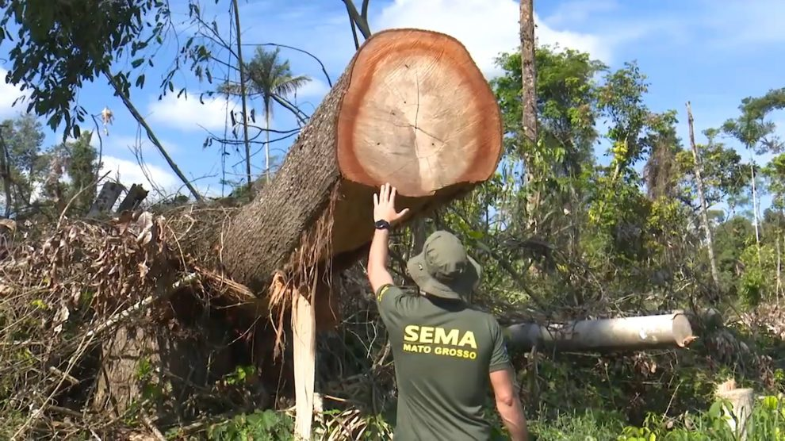
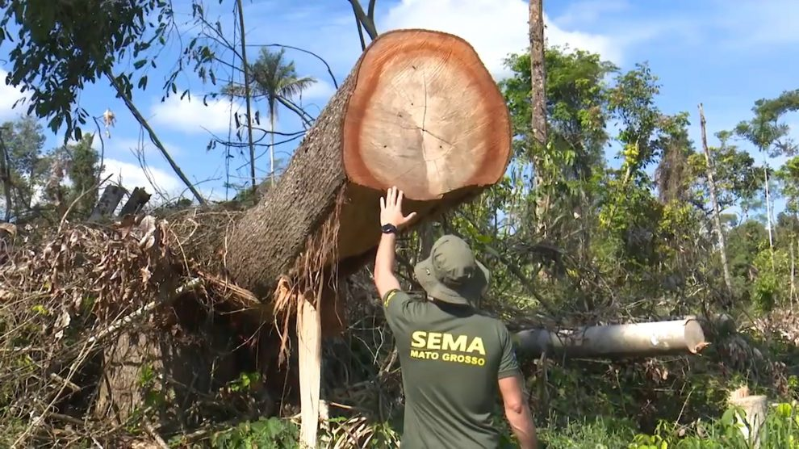

Agropecuária foi responsável por 90% da perda de vegetação natural do Brasil, aponta levantamento
Brasil perdeu área de vegetação nativa equivalente a 10,25% do território nacional entre 1985 e 2019;
A área perdida acumulada é de 87,2 milhões de hectares – 573 cidades de São Paulo;
9,3% da mata natural do país é secundária, ou seja, já foi desmatada em algum momento e voltou a crescer;
O Cerrado é o bioma que perdeu mais vegetação nativa: – 21,3%.
.jpg) 

Estima-se que o país tenha entre 30 e 100 milhoes de hectares de pastagens degradadas, , além de outros 24 milhões de hectares de áreas improdutivas.O Brasil não precisa avançar as florestas, Esse grande número de pastagens degradadas mostra que a pecuária não precisa avançar em florestas para expandir sua produção.O Brasil pode investir na recuperação dessas áreas, tornando-as produtivas novamente.
A pecuária brasileira tem hoje uma média de 1 animal por hectare. Com as novas tecnologias de manejo de pastagem e de manejo de animais, é possível criar 1,5 animal por hectare. Essa intensificação viabiliza o aumento da produção da pecuária e a produtividade do setor sem demandar a abertura de novas áreas de florestas.
Outra boa prática de agricultura é a chamada integração Lavoura-Pecuária-Floresta.é uma técnica que permite integrar, num mesmo espaço, produção agrícola, criação de gado e silvicultura.Pode ocorrer ao mesmo tempo,por exemplo, um sistema silvopastoril tem pasto para gado e árvores convivendo no mesmo espaço. Os benefícios da integração: melhora dos nutrientes no solo e do bem-estar animal; aumento da produção de grãos, fibras, carne, leite e produtos madeireiros e não madeireiros; geração de empregos diretos e indiretos; entre outros. E tudo isso sem precisar avançar em florestas, protegendo nossos recursos naturais.
Um exemplo desse sistema, são famílias que antes só produziam mandioca, agora passaram a plantar junto com a mandioca, árvores nativas como cupuaçu, açaí, além de espécies frutíferas adaptadas. Com essa mudança a família passou a integrar floresta com agricultura, abandonando práticas ultrapassadas como o uso do fogo na lavoura. O resultado é geração de renda e proteção da floresta ao mesmo tempo.
Uma forma do setor mostrar para sociedade que é realmente sustentável e eficiente é reportando suas emissões. Há várias ferramentas para isso. Uma delas é o GHG Protocolo Agropecuário. Com o GHG Protocolo, os produtores podem colocar seus números de rebanho, produção e área de lavoura, e a ferramenta calcula a geração de gases de efeito estufa decorrente de sua produção. Essa informação pode ser usada para que agricultores e pecuaristas entendam onde podem melhorar a eficiência de suas atividades e, assim, implementar a gestão das emissões. Um primeiro passo para entender a propriedade e facilitar o planejamento para que o produtor possa de fato investir em agricultura sustentável.
fonte
wribrasil.org.br/O desmatamento na Floresta Amazônica vem aumentando e esse aumento afeta diretamente o clíma. Mudança climática mais desmatamento é igual a um desastre para a Amazônia: o número médio de espécies de árvores presentes em um trecho da floresta tropical pode cair até 58% até 2050. Recentemente, a Amazônia brasileira registrou um aumento nas taxas de desmatamento. E enquanto o desmatamento é obviamente destrutivo, a mudança climática está piorando as coisas ao aumentar as temperaturas e secar a floresta tropical, tornando algumas áreas impróprias para as espécies que a chamam de lar. Os níveis de perda de diversidade de árvores projetados neste estudo prejudicam definitivamente a vida selvagem que depende dessas árvores para habitat ou alimento. Isso, por sua vez, prejudicaria a capacidade dos povos indígenas locais de sobreviver na floresta.
•Aquecimento diferencial do globo pela radiação solar;
• Distribuição assimétrica de oceanos e continentes;
• Características topográficas sobre os continentes (relevo);
• Circulação geral da Atmosfera: desempenha papel de destaque na determinação do clima, redistribuem calor, umidade e momentum (quantidade de movimento), diminuindo algumas vezes as diferenças regionais dos elementos climáticos e, outras vezes, acentuando estas diferenças, tais como temperatura e precipitação.
A agropecuária vem sendo dirigida bem ruim e se não concertar-mos isso logo, os resultados podem ser catastróficos! A Agropecuária pode sim tomar um rumo mais saudável para nossas vidas e para a vida da nossa floresta. Diminuindo o desmatamento vamos conseguir evitar drasticamente o aumento dos gases do efeito estufa.
Projeto desenvolvido durante o curso Meu Primeiro site promovido pela Junior Achievment Brasil e Microsoft